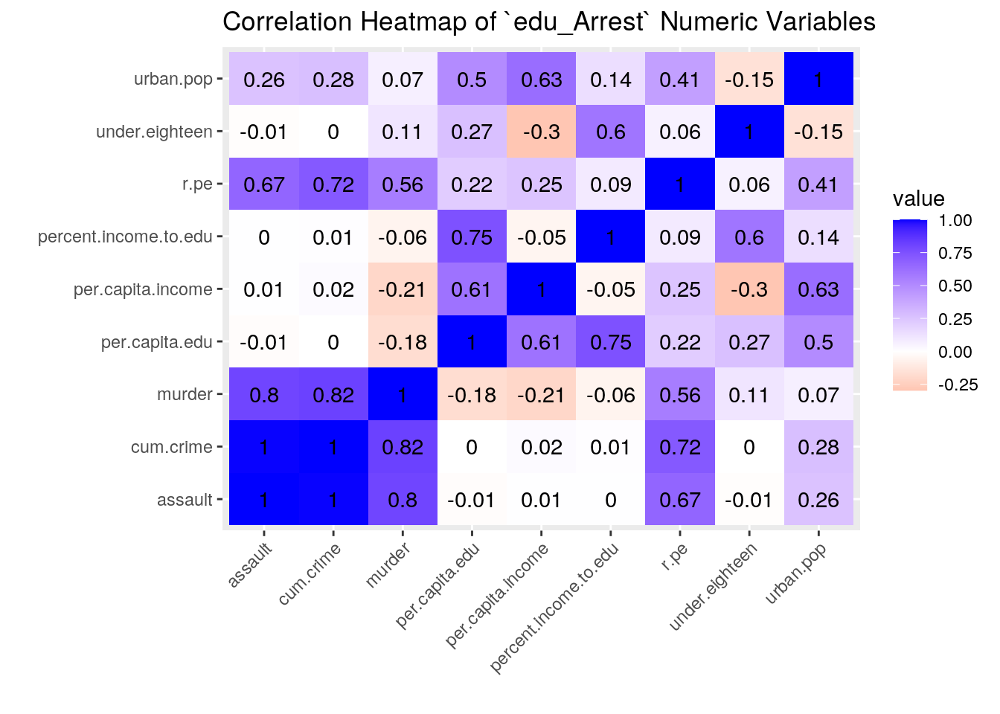

Prerequisite: Finding appropriate data from at least two sources per the instructions above: Failure to do this will result in a 0! You will submit a .Rmd file and a knitted document (html/pdf).
Having a good education has always been something my parents have prioritized for me. They both grew up in Vietnam in poor conditions and did not have the resources or opportunities to pursue higher educations like I fortunately have, so I wanted to tie this project with education in someway. The two datasets I have chosen are the education expenditure of the 50 states in the U.S. and the violent crime rates by state because I wanted to see if there was any correlation present between receiving a well-funded education and a state’s crime rate.
The education dataset was found in the robustbase library with data drawn from co-statisticians Chatterjee and Price. It has 6 variables:
As a warning, the crime dataset does contain crime topics that are sensitive/difficult to talk about. The dataset is from the datasets library with data drawn from the World Almanac and Book of Facts 1975. These variables are based on different major crimes committed during 1973 in each state:
X1 from the former dataset will be removed as there is already a measure for the urban population in the crime dataset.
I anticipate a negative correlation between receiving expenditure on public education and crime rates. I also expect per capita personal income to be negatively correlated with the crime rates, but a positive correlation between urban area density and crime rate. Please note that since the data was not taken during the same year and only in the same time era, the resulting correlations may not truly represent the relationship between education and crime rates.
First, I ran in the the three libraries that contain the methods and datasets necessary to complete this study. The data sets were already tidied fortunately, so I left the rearranging for Question 4 below. I modified the data sets to remove redundant information and renamed variables and certain data to make the data sets more readable and logical.
library(tidyverse)
library(datasets)
library(robustbase)
USArrest <- as.data.frame(USArrests)
edu <- as.data.frame(education)
glimpse(USArrests)## Rows: 50
## Columns: 4
## $ Murder <dbl> 13.2, 10.0, 8.1, 8.8, 9.0, 7.9, 3.3, 5.9, 15.4, 17.4, 5.3, 2…
## $ Assault <int> 236, 263, 294, 190, 276, 204, 110, 238, 335, 211, 46, 120, 2…
## $ UrbanPop <int> 58, 48, 80, 50, 91, 78, 77, 72, 80, 60, 83, 54, 83, 65, 57, …
## $ Rape <dbl> 21.2, 44.5, 31.0, 19.5, 40.6, 38.7, 11.1, 15.8, 31.9, 25.8, …glimpse(education)## Rows: 50
## Columns: 6
## $ State <fct> ME, NH, VT, MA, RI, CT, NY, NJ, PA, OH, IN, IL, MI, WI, MN, IA…
## $ Region <int> 1, 1, 1, 1, 1, 1, 1, 1, 1, 2, 2, 2, 2, 2, 2, 2, 2, 2, 2, 2, 2,…
## $ X1 <int> 508, 564, 322, 846, 871, 774, 856, 889, 715, 753, 649, 830, 73…
## $ X2 <int> 3944, 4578, 4011, 5233, 4780, 5889, 5663, 5759, 4894, 5012, 49…
## $ X3 <int> 325, 323, 328, 305, 303, 307, 301, 310, 300, 324, 329, 320, 33…
## $ Y <int> 235, 231, 270, 261, 300, 317, 387, 285, 300, 221, 264, 308, 37…# Before anything else, I am removing the X1 variable as it
# is redundant to the study
edu <- subset(edu, select = -c(X1))
# Renaming variables within the `education` and `USArrest`
# datasets to be more logical and to match syntax between the
# two
edu <- edu %>% rename(region = Region, per.capita.income = X2,
under.eighteen = X3, per.capita.edu = Y)
USArrest <- USArrest %>% rename(murder = Murder, assault = Assault,
urban.pop = UrbanPop, r.pe = Rape)
# Reconfigured the `Region` variable values to be characters
# that are more logical
edu$region <- as.character(edu$region)
edu[edu$region == "1", "region"] <- "Northeastern"
edu[edu$region == "2", "region"] <- "North Central"
edu[edu$region == "3", "region"] <- "Southern"
edu[edu$region == "4", "region"] <- "Western"
head(edu)## State region per.capita.income under.eighteen per.capita.edu
## 1 ME Northeastern 3944 325 235
## 2 NH Northeastern 4578 323 231
## 3 VT Northeastern 4011 328 270
## 4 MA Northeastern 5233 305 261
## 5 RI Northeastern 4780 303 300
## 6 CT Northeastern 5889 307 317head(USArrest)## murder assault urban.pop r.pe
## Alabama 13.2 236 58 21.2
## Alaska 10.0 263 48 44.5
## Arizona 8.1 294 80 31.0
## Arkansas 8.8 190 50 19.5
## California 9.0 276 91 40.6
## Colorado 7.9 204 78 38.7The join method (whether left_join, right_join, full_join, etc.) did not matter for these two datasets as they were both at 50 observations with completely matching common ID data points. I performed a left_join arbitrarily, but made sure to have the State variable of edu match with the Abbreviation variable of USArrest for the common ID.
There were no cases dropped. However, there was a slight bump in converting the rownames of USArrest into a variable and there was also two typos in the State variable ofedu` where Nebraska and Kentucky’s abbreviations were misspelled.
# Ran the `tibble` library to have access to the
# rownames_to_column method as the State names in `USArrest`
# was not a variable
library(tibble)
# State names between `edu` and `USArrest` were different so
# I brought in this variable to provide a common ID
key <- read_csv("https://raw.githubusercontent.com/jasonong/List-of-US-States/master/states.csv") #key to create a common state ID between the two datasets
USArrest <- rownames_to_column(USArrest, var = "State")
USArrest <- USArrest %>% left_join(key, by = c(State = "State"))
# Original `State` variable was not characters for `edu`
# dataset so have to convert to characters
edu$State <- as.character(edu$State)
edu[edu$State == "NB", "State"] <- "NE"
edu[30, "State"] <- "KY"
edu_Arrest <- edu %>% left_join(USArrest, by = c(State = "Abbreviation"),
suffix = c("", ".full"))
head(edu_Arrest)## State region per.capita.income under.eighteen per.capita.edu
## 1 ME Northeastern 3944 325 235
## 2 NH Northeastern 4578 323 231
## 3 VT Northeastern 4011 328 270
## 4 MA Northeastern 5233 305 261
## 5 RI Northeastern 4780 303 300
## 6 CT Northeastern 5889 307 317
## State.full murder assault urban.pop r.pe
## 1 Maine 2.1 83 51 7.8
## 2 New Hampshire 2.1 57 56 9.5
## 3 Vermont 2.2 48 32 11.2
## 4 Massachusetts 4.4 149 85 16.3
## 5 Rhode Island 3.4 174 87 8.3
## 6 Connecticut 3.3 110 77 11.1First, three variables were created using mutate(). percent.income.to.edu is the percentage of per capita income that is invested towards public education, cum.crime is the summation of the three crime variables to provide the amount of general arrests made (per 100,000 people), and above.med.crime is a categorical variable of if the amount of crime for the observation is above (TRUE) or below (FALSE) the median amount of crime.
Using the arrange() method, Florida was determined to be the state with the highest crime. Interestingly, Florida had a per.capita.edu of $230 which is near the $246 of North Dakota, the state with the least cumulative crime at 53.1 arrests per 100,000. The summary statistics were calculated for the observations with a per capita income invested into education below the average. The overall and group-by(above.med.crime) summary statistics for the numeric variables was also calculated. The education and financial variables were fairly similar between the state above and below the median crime amount, but obviously the crime amounts were substantially different with those below averaging 120.612000 arrests per 100,000 and above 278.948000 arrests per 100,000.
# Created three variables including one additional
# categorical variable which help us quantify and interpret
# the data
edu_Arrest <- edu_Arrest %>% mutate(percent.income.to.edu = per.capita.edu/per.capita.income *
100, cum.crime = murder + assault + r.pe, above.med.crime = cum.crime >
median(cum.crime))
# Selected State, per_capita_edu, and cum_crime as these
# three variables are of direct interest to the study.
# Arranged the data from greatest to least by cum_crime which
# provides an easy to read relationship between the three
# variables
edu_Arrest %>% select(State, per.capita.edu, cum.crime) %>% arrange(desc(cum.crime))## State per.capita.edu cum.crime
## 1 FL 243 382.3
## 2 NC 245 366.1
## 3 MD 330 339.1
## 4 AZ 332 333.1
## 5 NM 317 328.5
## 6 CA 332 325.6
## 7 AK 311 317.5
## 8 SC 233 315.9
## 9 NV 291 310.2
## 10 MI 379 302.2
## 11 MS 215 292.2
## 12 NY 387 291.2
## 13 LA 244 286.6
## 14 IL 308 283.4
## 15 AL 208 270.4
## 16 DE 344 259.7
## 17 GA 250 254.2
## 18 CO 304 250.6
## 19 TX 269 239.2
## 20 TN 212 228.1
## 21 AR 221 218.3
## 22 MO 231 215.2
## 23 OR 316 193.2
## 24 RI 300 185.7
## 25 NJ 285 185.2
## 26 VA 261 185.2
## 27 WY 323 183.4
## 28 OK 234 177.6
## 29 WA 312 175.2
## 30 MA 261 169.7
## 31 OH 221 148.7
## 32 UT 315 146.1
## 33 IN 264 141.2
## [ reached 'max' / getOption("max.print") -- omitted 17 rows ]# Filtered to see what the means are for the data points that
# were below the percent_income_to_edu median (percentage of
# per capita income that went towards education)
edu_Arrest %>% filter(percent.income.to.edu <= median(percent.income.to.edu)) %>%
summarize_if(is.numeric, mean)## per.capita.income under.eighteen per.capita.edu murder assault urban.pop
## 1 4658 319.44 249.4 7.92 160.64 62.48
## r.pe percent.income.to.edu cum.crime
## 1 20.168 5.380198 188.728# Summary statistics without grouping
summary_edu_Arrest <- edu_Arrest %>% summarize_if(is.numeric,
list(mean = mean, sd = sd, var = var, min = min, max = max,
ndistinct = n_distinct))
# Tidying
summary_edu_Arrest <- summary_edu_Arrest %>% pivot_longer(contains("_")) %>%
separate(name, into = c("datatype", "stat"), sep = "_") %>%
pivot_wider(names_from = "stat", values_from = "value")
head(summary_edu_Arrest)## # A tibble: 6 x 7
## datatype mean sd var min max ndistinct
## <chr> <dbl> <dbl> <dbl> <dbl> <dbl> <dbl>
## 1 per.capita.income 4675. 645. 415388. 3448 5889 50
## 2 under.eighteen 326. 19.4 377. 287 386 36
## 3 per.capita.edu 285. 61.3 3763. 208 546 43
## 4 murder 7.79 4.36 19.0 0.8 17.4 43
## 5 assault 171. 83.3 6945. 45 337 45
## 6 urban.pop 65.5 14.5 210. 32 91 36# Summary statistics with grouping
groupstat_edu_Arrest <- edu_Arrest %>% group_by(above.med.crime) %>%
summarize_if(is.numeric, list(mean = mean, sd = sd, var = var,
min = min, max = max, ndistinct = n_distinct))
# Tidying
groupstat_edu_Arrest <- groupstat_edu_Arrest %>% pivot_longer(contains("_")) %>%
separate(name, into = c("datatype", "stat"), sep = "_") %>%
pivot_wider(names_from = "stat", values_from = "value")
head(groupstat_edu_Arrest)## # A tibble: 6 x 8
## above.med.crime datatype mean sd var min max ndistinct
## <lgl> <chr> <dbl> <dbl> <dbl> <dbl> <dbl> <dbl>
## 1 FALSE per.capita.inc… 4.67e3 520. 2.71e5 3828 5889 25
## 2 FALSE under.eighteen 3.26e2 20.3 4.10e2 300 386 21
## 3 FALSE per.capita.edu 2.85e2 70.4 4.96e3 214 546 23
## 4 FALSE murder 4.63e0 2.30 5.31e0 0.8 9.7 21
## 5 FALSE assault 1.01e2 36.5 1.34e3 45 161 22
## 6 FALSE urban.pop 6.18e1 13.7 1.86e2 32 85 23Create a correlation heatmap of your numeric variables the way we did in class
Create two effective, polished plots with ggplot
The correlation heat map demonstrates that there is a relatively strong correlation between the different types of crimes (i.e. r.pe, murder, assault) with assault correlating with murder at 0.8 and with r.pe at 0.67, for example. However, the correlation between the two joined datasets is fairly small with per.capita.edu having a correlation of -0.01, 0.22, and -0.18 with assault, r.pe and murder, respectively.
The scatterplot plotted cum.crime against per.capita.edu based on U.S. region. Although, as a whole there does not appear to be a strong correlation between per capita invested into education and crime amounts, the regions do appear to be somewhat clustered. For example, the Southern region data points appear to be more localized to the top left area meaning that there per capita spending on education is relatively low compared to their crime arrests amounts. Originally, it was hypothesized that education investment and crime amounts will be negatively correlated with one another, but the data presented here does not seem to provide enough evidence to make that conclusion. Besides the one outlier located on the bottom right for the Western region, the data seems to be generally blobbed in a non-correlated manner.
The barplot plots per.capita.edu against region with comparison between observations above and below the median crime rate. Generally, the observations above the median crime rate spend more in per capita investment into education compared to their below-median counterparts for their respective regions. Again, this is an interesting correlation given the original hypothesis that education investment will be worse for states with higher crime numbers - albeit this correlation is not conclusive as the standard errors shown demonstrate that there is a substantial variability to the presented data and this is also not a direct comparison between crime and education investment. The Western region is different than the other regions as the Western states below the median crime rate generally seem to invest more into their education compared to the Western above-median states. From this data, no conclusive arguments can be made about a correlation between these three variables as the standard errors are too high and close to one another.
# Heatmap
edu_Arrest %>% select_if(is.numeric) %>% cor %>% as.data.frame %>%
rownames_to_column %>% pivot_longer(-1) %>% ggplot(aes(rowname,
name, fill = value)) + geom_tile() + scale_fill_gradient2(low = "red",
mid = "white", high = "blue") + ggtitle("Correlation Heatmap of `edu_Arrest` Numeric Variables") +
geom_text(aes(label = round(value, 2))) + theme(axis.text.x = element_text(angle = 45,
hjust = 1)) + xlab("") + ylab("")
# Scatterplot
ggplot(edu_Arrest, aes(per.capita.edu, cum.crime, color = region)) +
geom_point() + scale_y_continuous(breaks = seq(30, 400, 50)) +
scale_x_continuous(breaks = seq(175, 550, 50)) + ggtitle("Crime Numbers and Per Capita Expenditure \non Education by Region") +
labs(y = "Cumulative Crime Arrests (per 100,000)", x = "Per Capita Spent on Education ($)") +
theme(legend.title = element_text(colour = "lightblue", face = "bold.italic",
family = "Helvetica"), plot.title = element_text(colour = "blue",
family = "Helvetica"), legend.text = element_text(face = "italic",
colour = "lightblue", family = "Helvetica"), axis.title = element_text(family = "Helvetica",
colour = "lightblue"), axis.text = element_text(family = "Helvetica",
colour = "lightblue"))# Barplot
ggplot(edu_Arrest, aes(x = region, y = per.capita.edu, fill = above.med.crime)) +
geom_bar(stat = "summary", fun = mean, position = "dodge") +
geom_errorbar(stat = "summary", fun.data = mean_se, position = "dodge") +
theme(axis.text.x = element_text(angle = 45, hjust = 1),
plot.title = element_text(colour = "blue", family = "Helvetica"),
legend.title = element_text(colour = "lightblue", face = "bold.italic",
family = "Helvetica"), legend.text = element_text(face = "italic",
colour = "lightblue", family = "Helvetica"), axis.title = element_text(family = "Helvetica",
colour = "lightblue"), axis.text = element_text(family = "Helvetica",
colour = "lightblue")) + labs(fill = "Above Median Crime Rate? (TRUE=YES, FALSE=NO)",
title = "Per Capita Expenditure on Education Based on \nRegionality and Cumulative Crime Arrests Median",
y = "Per Capita Spent on Education ($)", x = "U.S. Region")PAM clustering was used for the clustering algorithm with two medoids identified. A k-value of 2 was determined to have the highest silhouette width. The resulting cluster visualization seems to show that there is not a strong clustering association based on the four variables of per.capita.income, per.capita.edu, urban.pop, and cum.crime. The distances between the clusters is not well defined with the clusters meshing somewhat with each other. This means that there is not strong regularity within the data.
library(cluster)
# computed silhouette widths at different k-values using a
# for-loop
pam_dats <- edu_Arrest %>% select(per.capita.income, per.capita.edu,
urban.pop, cum.crime) %>% scale()
sil_width <- vector()
for (i in 2:10) {
pam_fit <- pam(pam_dats, k = i)
sil_width[i] <- pam_fit$silinfo$avg.width
}
ggplot() + geom_line(aes(x = 1:10, y = sil_width)) + scale_x_continuous(name = "k",
breaks = 1:10) #determined the k-value of 2 works best as it had the highest silhouette width# PAM cluster analysis
pam_edu_Arrest <- edu_Arrest %>% select(per.capita.income, per.capita.edu,
urban.pop, cum.crime) %>% scale() %>% pam(2)
pam_edu_Arrest## Medoids:
## ID per.capita.income per.capita.edu urban.pop cum.crime
## [1,] 39 -0.5463407 -0.2706222 -0.7972496 -0.6744993
## [2,] 41 0.5754483 0.3162693 0.8608085 0.5442689
## Clustering vector:
## [1] 1 1 1 2 2 2 2 2 2 2 1 2 2 1 1 1 2 1 1 1 2 2 2 1 1 1 1 1 2 1 1 1 1 1 1 1 2 1
## [39] 1 1 2 2 2 2 2 2 2 2 2 2
## Objective function:
## build swap
## 1.548366 1.492043
##
## Available components:
## [1] "medoids" "id.med" "clustering" "objective" "isolation"
## [6] "clusinfo" "silinfo" "diss" "call" "data"# Visualization of clusters
finals <- edu_Arrest %>% select(per.capita.income, per.capita.edu,
urban.pop, cum.crime) %>% mutate(cluster = pam_edu_Arrest$clustering)
ggplot(finals, aes(x = per.capita.edu, y = cum.crime, color = cluster)) +
geom_point()## paste this chunk into the ```{r setup} chunk at the top of
## your project 1 .Rmd file
knitr::opts_chunk$set(echo = TRUE, eval = TRUE, fig.align = "center",
warning = F, message = F, tidy = TRUE, tidy.opts = list(width.cutoff = 60),
R.options = list(max.print = 100))…